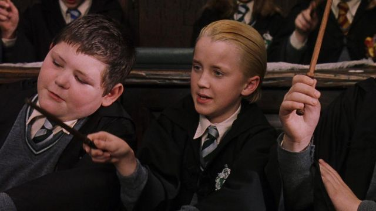
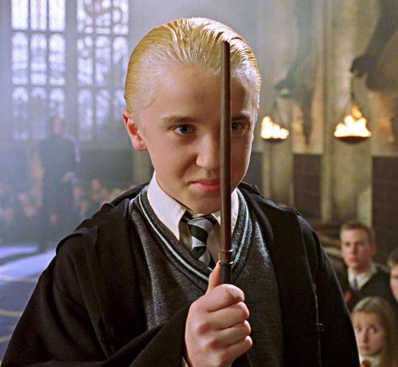
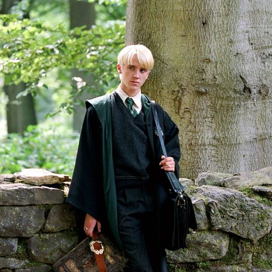
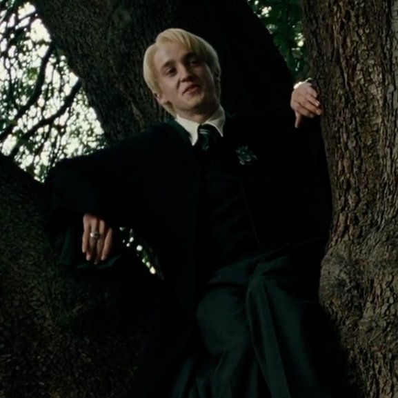
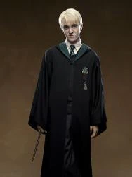
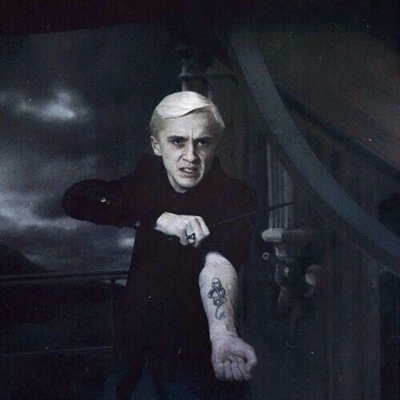
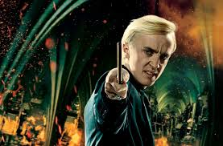

Draco Malfoy es un mago de sangre pura, tiene mucha arrogancia y orgullo familiar. Como miembro de la casa Slytherin, Draco no soporta a Harry Potter, con el qual tiene una enorme rivalidad, a causa de cuando que falto al respeto a Hagrid y Ron.
Durante su primer año, se dedico a complicar a Harry, Ron y Hermione a causa de su odio a Harry y al hecho de que Ron es sangre pura pero su familia se relacione y defiende a los muggles y además el hecho de que Hermione sea lista. Su odio por Harry creció cuando vio que ingreso en el equipo de quidditch cuando los de primer año no tienen permiso. Una de las acciones que hizo fue intentar pillarlos cuando iban a ver a Hagrid con un huevo de dragón.
En su segundo año, pudo ingresar al equipo de quidditch y a causa de esto llego a llamar a Hermione sangre sucia, un termino ofensivo para llamar a los hijos de muggle.
En su tercer año, comenzo burlandose de Harry a causa de su miedo a los dementores y gracias al hecho de que Hagrid paso a ser profesor, él dedico sus maquinaciones Hagrid. El hecho de que Hagrid trajera a Buckbeak y celeso de que Harry llego a domarlo, lo provoco y a causa de esto acabo herido, peró lo exagero para que Hagrid pueda llegar a ser expulsado y para llamar la atención aunque fracaso.
En su cuarto año, a causa de que Harry participo en el Torneo de los Tres Magos, se burló de él y que apoyo a Cedric durante el Torneo.
En su quinto año, fue prefecto y miembro de la Brigada Inquisitorial, pero a causa de la detención de su padre, se desanimo.
En su sexto año, a causa de la detención de su padre, Voldemort enfadado, decidió vengarse dandole la missión de matar a Dumbledore a final de año sabiendo que no era capaz de hacerlo para humillar a Lucius.
En su último año, protegió a Harry de los mortífagos diciendo que no era él. Durante la batalla de Hogwarts, lo defendio de un hechizo de la muerte de Crabble. Viendo la batalla y por su casi muerte, decidió retirarse con sus padres.
Despues de la batalla y a causa de que la familia Malfoy ayudo a la justicia en la captura de los mortífagos pudieron ser libres. Se caso con Astoria Greengrass, que tenia una maldición hereditaria y a causa de eso decepciono a sus padres. Tubo un hijo, al qual se dedico a decirle que la sangre no importa.

Harry Potter y la piedra filosofal
"Longbottom, si tu cerebro fuera oro, serías más pobre que Weasley, y eso es decir mucho"

Harry Potter y la cámara secreta
"¿Asustado, Potter?"

Harry Potter y el prisionero de Azkaban
"¡Te arrepentirás de esto! ¡Tú y tu maldito pollo!"

Harry Potter y el cáliz de fuego
"No creo que vayas a durar 10 minutos en este torneo. Él no está de acuerdo. Cree que no durarás 5."

Harry Potter y la orden del fénix
"Pero a ti te caen muy bien los Weasley, ¿verdad, Potter?"

Harry Potter y el misterio del príncipe
"¡Tengo que matarte o él me matará a mí!"

Harry Potter y las reliquias de la muerte
"Mi lealtad no está tan clara como parece."